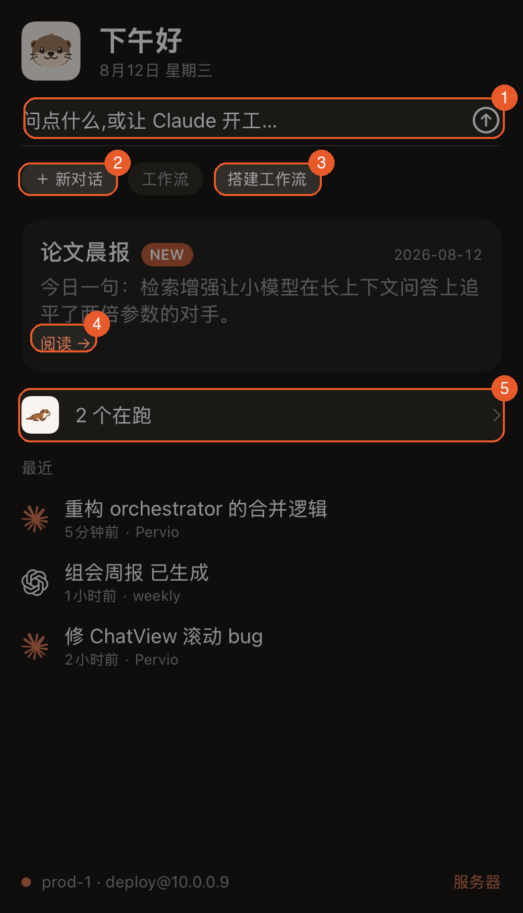
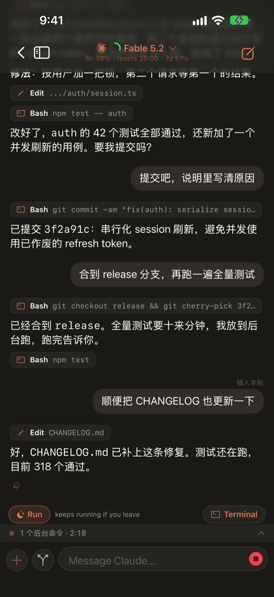
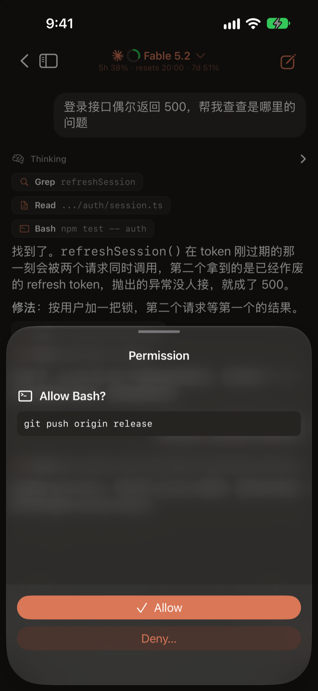
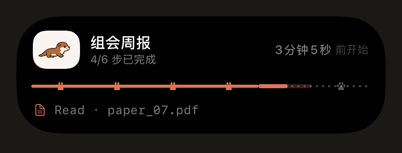
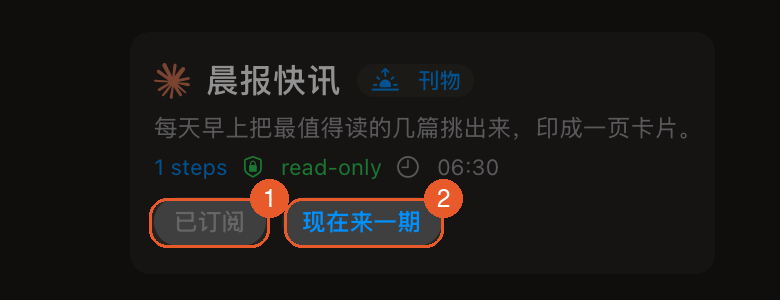
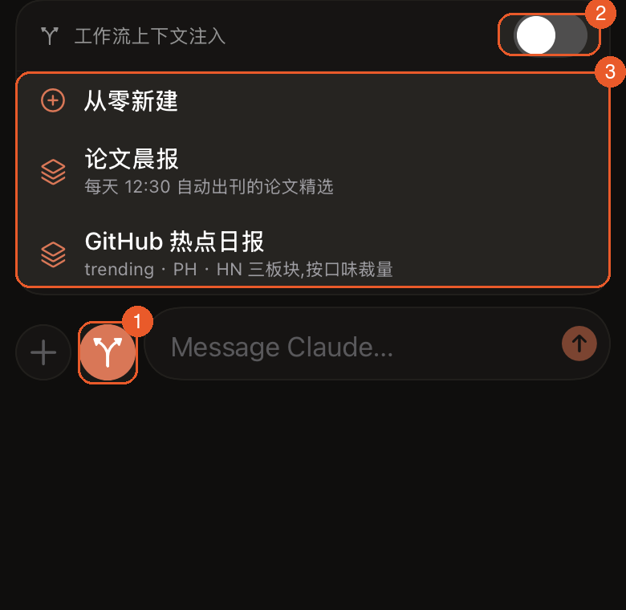
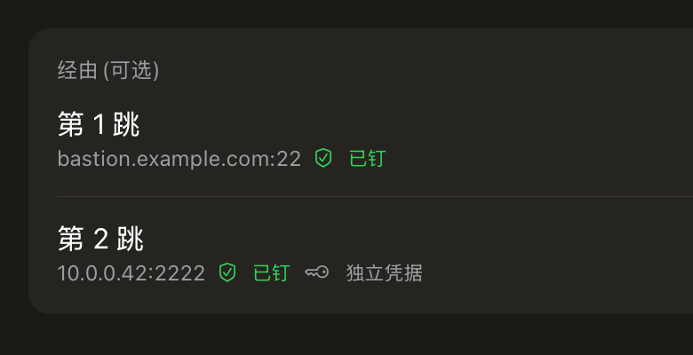

需要什么
| iPhone | iOS 17 及以上，从 TestFlight 安装。 |
| 电脑 | 一台 Mac，打开「远程登录」（SSH）。要有 python3，Claude Code、Codex、Cursor 至少装一个并登录好。要用手机上的终端，再装 tmux。 |
| 网络 | 手机要能连到电脑。在同一个 Wi-Fi 下就能用；出门在外推荐 Tailscale。 |
电脑上不用装 Pervio 的任何东西。要用到的脚本打包在 app 里，第一次连接时由 app 通过 SSH 放到 ~/.pervio/bin；以后 app 更新了，脚本跟着换。电脑上没有常驻的服务，脚本在手机叫它的时候才跑。
Linux 主机也能用，但每天在用的是 macOS。
安装
第一次装大约十五分钟。下面按 Mac 写。
-
装 app
手机上先装 Apple 的 TestFlight，再打开 testflight.apple.com/join/EagwZXV1，安装 Pervio。
-
在 Mac 上打开远程登录
系统设置 → 通用 → 共享 → 打开「远程登录」。「允许访问」可以只选你自己。
-
装一个引擎并登录
在电脑自己的「终端」里做。三个里装一个就行：
npm install -g @anthropic-ai/claude-code && claude # Claude Code npm install -g @openai/codex && codex login # 或 Codex curl https://cursor.com/install -fsS | bash # 或 Cursor,然后 agent login
Claude Code 的登录一定要在 Mac 自己的终端里做，原因见下面的「Claude Code 显示未登录」。
-
给手机生成一把 SSH 密钥
也可以用密码登录，密钥更安全。在电脑的终端里：
ssh-keygen -t ed25519 -f ~/.ssh/pervio_phone -N "" cat ~/.ssh/pervio_phone.pub >> ~/.ssh/authorized_keys chmod 600 ~/.ssh/authorized_keys
-
在 app 里添加服务器
服务器 → 添加。表单是英文的：
Name 随便起。 Host 电脑的地址：局域网 IP，或 Tailscale 的 100.x.y.z。Port 默认 22。 Username 电脑的登录用户名，就是在电脑终端里跑 whoami显示的那个。不是电脑名，也不是 Apple ID。Method 选 Key，把 cat ~/.ssh/pervio_phone的输出整段粘进去；或选 Password，填电脑的登录密码。两样都只存在 iOS 钥匙串里。Project dir on server 默认 ~。它决定这台服务器在手机上能看到哪些对话，见「工作目录」。然后点 Fetch host key from server，核对指纹，保存。这一步只取指纹，不登录，密码和密钥这时不会发出去。以后每次连接都会核对这个指纹，对不上就直接拒绝连接。
-
连接
第一次连上时，app 会把脚本放到电脑上，要等几秒。首页出现问候语，就是装好了。
不在同一个网络
在电脑和手机上都装 Tailscale，登录同一个账号，然后把 app 里的 Host 换成电脑的 100.x.y.z 地址（Mac 菜单栏的 Tailscale 图标里能看到，或者在终端跑 tailscale ip -4）。这样不用把电脑的 SSH 开到公网。
如果这个 Tailscale 账号还加入了公司或学校的网络，两台设备都要切到你自己的那个网络。
Claude Code 显示未登录
Claude Code 把登录凭据存在 macOS 钥匙串里。Pervio 是通过 SSH 启动 claude 的，SSH 下的进程读不到钥匙串，所以会出现这种情况：你在手机的终端里能正常用 claude，对话里却显示未登录。两种解决办法：
- 在 Mac 自己的「终端」里运行一次
claude，按提示登录。 - Mac 平时不登录图形界面的话，用长期令牌：在 Mac 上运行
claude setup-token，把得到的那串字符粘到 app 的服务器设置里「Claude 登录令牌(SSH 用)」一栏，点 写到 Mac。它只写进 Mac 的~/.pervio/credentials.env，手机不保存。
Codex 和 Cursor 的凭据是普通文件，没有这个问题。
连不上
首页、项目页、对话列表和工作流列表连不上电脑时，原来的内容留着不动，上面多一行橙色的字写明原因，并且自己重试：隔 2、4、8、15 秒各试一次，之后每 30 秒一次，这一页开着就一直试，连上后这行字自己消失。不用退出 app；想早点再试就下拉。打开这一页、从别的页回到这一页、app 回到前台时，也都会重新读一次。
密码或密钥被拒绝、主机密钥对不上这类问题，等多久也不会好，所以不自动重试：这行字是红色的，下面有 去设置，改完回来会重新读。
橙色那行下面有 运行连接体检。它依次检查 SSH 连接、Claude Code 有没有装、有没有登录、python3、服务器脚本，每一项没过都会写出怎么修。找 Claude Code 的位置和 app 实际启动它时找的位置是同一份。常见的三种：
| 连接被拒绝 | 多半是 Mac 的「远程登录」没开。 |
| 连接超时 | 手机和电脑不在同一个网络，或者电脑睡着了。检查 Wi-Fi 或 Tailscale，确认 Host 填的是电脑现在的地址。 |
| 认证失败 | 用户名、密码或密钥有一样不对。用户名是 whoami 的输出。 |
电脑睡着时连不上，定时的工作流也会错过时间。长期开着用的 Mac，在系统设置里搜「睡眠」，打开「显示器关闭时防止自动进入睡眠」。
首页
| 1输入框 | 打一句话，回车，直接开始一段新对话。 |
| 2新对话 | 先进到对话页再说。长按可以先选目录。 |
| 3搭建工作流 | 选从零新建，或者改一个现有模板。你描述要什么，agent 写出模板并自己验证。 |
| 4刊物 | 你订阅的工作流交出来的成品。没用过的模板不会出现在这里。 |
| 5N 个在跑 | 正在运行的后台任务，点进去看进度。 |
下面的「最近」是最近的对话，点一条进去接着聊。在一行上向右滑是置顶，向左滑是删除。置顶记在电脑上，换手机、重装 app 之后还在；置顶的对话删不掉，要删先取消置顶。
最底下一行是当前连的服务器，点「服务器」可以添加、编辑、切换。

对话
Pervio 读的是 Claude Code、Codex、Cursor 自己的会话记录。在电脑的终端或编辑器里开的对话，手机上能接着聊；手机上开的，回到电脑前也在。
回复是流式显示的。agent 读文件、跑命令、改代码，每一步在对话里是单独的一行，点开能看详情：Edit 是改动前后的对比，Bash 是完整的命令。
回复里写到的电脑上的文件路径可以点。图片、PDF、文本会从电脑取回来，用系统预览打开；超过 25 MB 的不取，会直接告诉你。
模型写的 LaTeX 公式会排成公式；排不出来的，显示原文。

引擎、模型、供应商
对话页顶部的徽章写着当前的引擎、模型和供应商，点开可以换。发出第一句话之后引擎就定了，要换引擎得新开一段对话；模型和供应商随时能换。菜单里的 更多设置… 是完整的设置：模型、Effort（推理深度）、权限、目录。
模型列表来自你的电脑，不是写死在 app 里的。Claude 的列表读自电脑上装的 claude 程序，Codex 的读自 Codex 自己的模型缓存，Cursor 的是你账号里的列表。电脑上的命令行工具更新之后，重新连接一次，新模型就在列表里了。
Claude Code 的对话里也可以直接输入 /model 模型名 来换，换了之后这段对话一直用它。
第三方供应商怎么加，见「供应商」。
发消息时带上东西
输入框左边的 ＋：
| 照片 | 相册里的图片。 |
| 文件 | 手机「文件」app 里的文件。 |
| 服务器文件… | 浏览电脑上的目录，选一个文件附上。也可以点 把此目录交给对话，把整个文件夹交给 agent。 |
| 背景… | 把以前的一段对话作为背景附上。 |
| 网页预览 | 打开电脑上的网页，见「网页预览」。 |
| 双开… | 给这段对话配一个伙伴，见「双开」。 |
交给对话的文件夹不会被打包上传，交过去的只是路径。之后这段对话里 agent 可以读写这个文件夹，它显示在输入框上方；长按它，选「这个对话不再带上这个文件夹」可以取消。
添加了两台以上的服务器时，服务器文件… 和 背景… 的页面顶上多一行 来自，可以换成另一台（同一台电脑的另一个条目不算）。在另一台上选的文件，由手机先读下来，再传到这段对话所在的那台，作为附件；单个文件不超过 8 MB，超过的在列表里标着，不能选。输入框上方写着正在连接、正在读还是正在传，和进度，旁边的 ✕ 可以停下。传完之前不要离开 Pervio，中途被打断会有一条提示。另一台上的目录不能交给对话。
文件浏览器里，链接那一行会写出它实际指向哪。在另一台上选的名字如果是一个链接，而且指向它所在文件夹之外的文件，手机会先把真实位置给你看，你点 带过来 才会读。
在另一台上选的是对话时，带过来的是它的文稿。对话太长、文稿里放不下的部分，另作一份完整记录一起带过来，文稿开头写着它在哪；完整记录也不超过 8 MB，超出时留后面的部分，并写明哪些没带过来。一起勾选的说明和记忆文件，带过来的是开头 60 KB 的文字，开头标着来自哪台、哪个文件。带过来的都是当时的副本，放在这台的上传文件夹里，大约 7 天后清理。
重新说、分支
长按自己发过的一条消息，菜单里有 从这里重新说：复制出一段新对话，内容到这条消息之前为止，然后切过去，原话放回输入框，改完再发。
每一轮的最后一条回复下面有 分支到新对话：把到这一轮为止的内容复制成一段新对话并切过去。
两种做法都不动原来那段对话，它还在列表里。Cursor 的对话没有这两项。
改名
点顶部的徽章，选 重命名对话。留空就恢复默认的标题。
Run 模式
输入框上方左边的按钮写着 Chat 或 Run，点一下切换。这个选择按服务器记住。
| Chat | 这一轮和 app 的连接绑在一起。离开 app 或者断线，这一轮就停了。 |
| Run | 任务是电脑上的一个后台进程。手机锁屏、切到别的 app、断网都不影响；重新打开时，从上次读到的位置接着读。 |
Run 模式下：
- 任务还在跑的时候可以继续发消息。这句话会进到正在跑的这一轮里，消息上标着「插入本轮」。Claude Code 和 Codex 支持。Codex 要等手上这一步做完才接这句话，在那之前消息上标的是「已送达,等当前这步做完」。
- agent 派出去的子 agent 和它放到后台的命令（比如一遍全量测试），在输入框上方合成一行：几个子 agent、几个后台命令、已经跑了多久。点这一行看列表：每个子 agent 的类型、用时、用掉的 token、调了几次工具、正在做什么；子 agent 自己开的命令排在它下面；结束的带着它的结论。全部结束后，对话末尾留一行结果，点开是同一张列表；离开这段对话再回来它还在，到你发下一条消息为止（最多留半天）。任务还在跑的时候可以接着聊，回答你的是同一个进程。
- Claude Code、Codex、Cursor 的子 agent 都会出现在这一行。Codex 的子 agent 标的是它用的模型；Cursor 不报 token 和工具次数，只有用时和结论。Chat 模式下，一轮还没结束的时候也有这一行。
- Run 模式下用 Claude Code 时，列表里每个进行中的任务右边有一个停止键：确认后只停这一个，子 agent 自己开的后台命令跟着停，对话和其他任务不受影响。
- 进度显示在灵动岛和锁屏上；回复完成时有一条推送，见「锁屏和通知」。
- 首页的「N 个在跑」列出所有还在跑的任务。
后台任务的输出写在电脑的 ~/.pervio/runs/ 里。

审批和权限
在需要审批的权限档位下，agent 要改文件、跑命令时会停下来。手机上弹出它要执行的内容，你点 Allow 或 Deny。拒绝之后任务不会中断，agent 会收到「被拒绝」这个结果，接着往下做。
你不在 app 里的时候，锁屏上会有一条提醒，告诉你它在等。
档位在徽章菜单的 更多设置… 里选。名字是英文的，两家引擎不一样。

Claude Code
| Auto | 由 Claude Code 按任务自己决定用哪一档。 |
| Ask before edits | 每次改文件、跑命令之前都问你。 |
| Edit automatically | 文件改动直接应用，不问。 |
| Plan | 只读。先看代码、给出计划，你同意之后才动手。 |
| Bypass | 什么都不问。只在你信得过的机器上用。 |
Codex
| Full access | 不设沙箱，从不询问。这是 Codex 自己的 app 的默认，也是这里的默认。 |
| Approve for me | 限制在项目目录里。超出范围的操作由 Codex 自己的审查器决定。 |
| Ask for approval | 限制在项目目录里。超出范围的操作等你在手机上点 Allow 或 Deny。只在 Chat 模式下会问；Run 模式下没有人在线回答，不会问。 |
| Read-only | 只读、只出计划，不能改文件，不能跑命令。 |
锁屏和通知

后台任务跑着的时候，灵动岛和锁屏上显示它的进度：工作流显示走到第几步，对话显示当前的动作（在读哪个文件、跑哪条命令）。
下面这些事会推送到锁屏：
- 一轮后台任务完成或失败。标题是项目名加结果，正文是这个任务开头的几十个字。
- agent 在等你审批。
- 工作流跑完或失败，订阅的刊物送达。
- 双开的监督任务有了结果：通过、需要你、三轮没通过。
通知不用配置。它是整个产品里唯一经过 Pervio 服务器的东西：电脑把通知的标题和正文交给 push.pervio.dev 上的中继，中继签名后转给 Apple。中继不保存内容。不想经过它，在电脑上执行：
mkdir -p ~/.pervio/push && echo off > ~/.pervio/push/gateway
关掉之后，app 开着的时候仍然有本地提醒。
网页预览
电脑上只监听 localhost 的网页，比如开发服务器、文档站，在手机的 Safari 里是打不开的。网页预览让它经 SSH 连接在手机上打开，端口不用对外开。
- ＋ → 网页预览，列出电脑上正在监听的端口，每行写着是哪个程序。点一行打开，也可以自己输入端口号。标着「仅本机」的是只绑在 localhost 上的。
- 回复里出现
http://localhost:3000这样的链接，点一下就在预览里打开。 - 预览页上有 截图到对话：当前页面的截图放进输入框，你接着打字说哪里不对。
- 页面里指向电脑其他端口的链接留在预览里打开；指向外网的链接可以 在 Safari 打开。
预览页上有一行写着隧道的状态。app 退到后台时隧道会断开，回来时自动重连。
如果提示电脑不允许端口转发，是电脑的 sshd 把 AllowTcpForwarding 关了，要在电脑上打开它。
终端
输入框上方右边的 Terminal，打开电脑上的一个 shell，目录是这段对话的项目目录。
- 底下是 tmux。连接断了，里面跑的东西不会停；重新打开，回到原来的屏幕。
- 键盘上方有一排手机键盘没有的键：Esc、Tab、方向键、Ctrl 组合键、常用符号。vim 这样的全屏程序能用。
- 它用的是单独的一组 tmux 会话，不会和你自己在电脑上开的 tmux 混在一起。
电脑上需要装 tmux（Mac 上是 brew install tmux）。没装的话，打开终端时会直接提示。
双开
把两段对话配成一组，通常是两家不同的模型。在一段对话的 ＋ 里选 双开…，给它配一个伙伴：新开一段另一家的对话，或者选一段已有的对话。然后选一种搭法。
组的状态存在电脑上，整轮由电脑推进，手机锁屏也照样跑完。
头脑风暴
你说一句，主对话和伙伴同时各自回答，两个答案并排显示。然后主对话汇总：先列分歧，再给结论，显示在单独的「第 N 轮结论」框里。框里的 交给主去做 会跳到主对话，让它按结论动手。
默认两边都是只读的。想让谁动手，在成员的参数里改。
监督
你给主对话一个任务，它去做。监督者（另一家模型）看结果、跑测试、提意见；意见回给主对话，它再做。最多三轮。监督者每次回复的最后一行只能是三种结论之一：
| 通过 | 任务结束，监督者的总结推送给你。 |
| 继续 | 意见发回主对话，进入下一轮。第三轮还是「继续」，任务停在那里并推送给你，你可以选 再来 3 轮。 |
| 需要你 | 它写清楚要你决定什么，循环暂停。你在输入框里回答，两边都带着你的决定继续。 |
循环跑着的时候不能直接插话，只有 停；要改主意，先停，再重新发。监督者和主对话在同一个目录里，它只检查，不改东西。
主对话的权限如果是 Ask before edits，开始时会改成 Edit automatically，因为后台的循环里没法弹审批。
双窗
两段对话并排，各聊各的。可以只跟一边说，也可以同时问两边。两边不会自动互通，只有在你点 让伙伴 1 点评伙伴 2（或者反过来）的时候，才把对方最后一条回复递过去请它评；你在输入框里打的字会作为补充一起带上。
工作流
工作流是多步骤的流水线，可以定时。它在电脑上跑完，交出来的是一份能直接读的成品，不是聊天记录。自带几个模板，其中论文晨报和 GitHub 热点日报是每天定时出的刊物。这两份刊物每一步用的都是 Claude Code，只装了 Codex 或 Cursor 的话暂时跑不了，市场里会灰掉并写明原因。
订阅
在市场里点一个模板的 订阅。订阅只是登记，不会马上跑：到了你定的时间，电脑自己跑一期，那一行会写着第一期什么时候送到。不想等，点 现在来一期。

定时靠 Mac 上的一条 launchd 任务（Linux 上是一行 cron），每五分钟看一次有没有到点的。只有设了定时才会有这条任务。
读一期
首页的刊物卡片点「阅读」。论文晨报每期分三档：必读、速读、扫过。
- 长按一篇可以打分，你的评分会影响之后几期怎么选。
- 图可以点开放大。往期都留着。
- 可以在电脑的浏览器里看大屏版。这时电脑会在
127.0.0.1上起一个阅读页，闲置之后自己退出。

自己搭一条
首页点 搭建工作流，选从零新建或者改一个现有模板，用一句话描述你要什么。agent 会写出模板并自己验证一遍。
对话里输入框旁边的分叉按钮打开工作流面板。上面的开关打开之后，这段对话里的 agent 可以列出和运行你的工作流、查运行结果；关着就是普通对话。

开关打开时，如果 agent 想替你新建或修改订阅，会先弹一张确认单：订什么、几点、周几、保留几期，你点允许才生效。你自己在市场里点订阅不会弹。
agent 从对话里启动工作流时，确认单上列的是这条工作流实际要做的事：每一步的权限、所在目录、要在电脑上运行的每一行命令。手机读不出来或者显示不全的，不能点允许。
它启动的工作流不会比这段对话的权限高：Plan 档下不能启动；某一步的权限高过对话当前的档位，也不能启动，要么换档，要么你自己在工作流页面启动。在不询问你的档位（Auto）下，它自己写的工作流不能带命令行，也不能跑到对话目录之外；你保存的模板不受这两条限制。
服务器
可以存多台服务器，每台有自己的凭据和目录。首页底部的「服务器」里添加、编辑、删除；其中一台是主服务器，首页显示的是它上面的东西。
连上一台服务器时，app 会看它装了哪些引擎。默认的引擎没装、别的装了，就自动用装了的那个。
工作目录
添加服务器时填的目录（Project dir）决定这台服务器在手机上的范围：对话列表、搜索、后台任务、新对话选目录，都只在这个目录和它的子目录里。填 ~ 看整台电脑，填 ~/a 只看 a。
给对话附加文件不受这个限制。同一台电脑可以添加多次，每条配一个目录。
跳板机
要经过别的机器才能连到的服务器，在服务器设置的「经由」里加跳板，可以加多跳。每一跳都要固定主机密钥，没固定就不连。每一跳可以用和目标机器不同的凭据。

供应商
Claude Code 和 Codex 可以接第三方的模型接口。在对话设置或服务器设置里点「添加供应商」：
- 从常用的里选一家：智谱 GLM、Kimi、MiniMax、DeepSeek、通义千问、OpenRouter。有地区之分的再选中国区或国际版。地址和模型名会自动填好，你只需要粘 API key。
- 保存时会用这个 key 向供应商查一次模型列表。
- key 写在电脑的
~/.pervio/providers/里，手机不保存。 - 已经按官方方式配在
~/.claude/settings.json或~/.codex/config.toml里的供应商会自动出现。
加好之后，在任何对话顶部的徽章菜单里切换。Cursor 只能用它自己的账号。
设置
| App 语言 | 中文或英文。界面、app 写给模型的提示词、推送一起换，马上生效。工作流模板的内容保持它原来的语言。 |
| 文字大小 | 整个 app 的文字一起缩放，终端的字号跟着变。也可以跟随系统。 |
| 存储 | 论文晨报里的图缓存在手机上。超过 500 MB，或者 90 天没看过的，启动时自动清理；也可以手动清空。 |
| 隐私政策 | 在浏览器里打开隐私政策。 |
常见问题
发消息被拒绝，提示对话正在别处运行
Codex 规定一段对话同一时间只能有一个客户端在写。这段对话如果还开在终端、VS Code 或另一部手机上，手机发的消息会被拒绝，同时出现 强制接管。确认之后，另一边会被断开，刚才那句话自动重发，历史不会丢。
收不到推送
- 在 iOS 设置里确认允许了 Pervio 的通知。
- 手机要连上过这台电脑一次。手机是在连接时把自己的推送凭证交给电脑的。
- 在电脑上运行
~/.pervio/bin/pervio-push check，它会说缺什么。 - 自己从源码编译的版本收不到 Pervio 中继的推送，见仓库 README 的「从源码构建」。
对话里没有回复
先在电脑自己的终端里确认引擎能用、已经登录（claude、codex 或 agent）。Claude Code 在终端里能用、在 Pervio 里显示未登录，见上面。
换了网络要重新配置吗
用 Tailscale 的话不用，地址不变。用局域网 IP 的话，换了 Wi-Fi 之后电脑的地址可能变了，到服务器设置里改 Host。
电脑重启了
app 重新连接就行。重启前还在跑的后台任务和终端会话不会回来。定时的工作流要等你在电脑上登录之后才会继续。
我的数据经过谁的服务器
对话、文件、任务只在手机和你自己的电脑之间，走 SSH。只有推送通知的标题和正文经过 Pervio 的中继，可以关掉。没有账号，没有统计。详细的见隐私。
卸载
手机上删掉 app。电脑是 Mac 的，在终端里运行：
launchctl bootout gui/$(id -u)/com.pervio.schedule 2>/dev/null # 设过定时工作流才需要 rm -f ~/Library/LaunchAgents/com.pervio.schedule.plist tmux -L pervio kill-server 2>/dev/null # 还开着的终端会话 rm -rf ~/.pervio
电脑是 Linux 的，运行这三行：
crontab -l | grep -v '# pervio-schedule' | crontab - # 设过定时工作流才需要 tmux -L pervio kill-server 2>/dev/null # 还开着的终端会话 rm -rf ~/.pervio
Claude Code、Codex、Cursor 和它们的对话记录是你自己装的，不受影响。
隐私
- 对话、文件、任务只在你的手机和你的电脑之间，在 SSH 里传输，不经过 Pervio 的任何服务器。app 里没有账号、统计、崩溃上报。
- SSH 密钥和密码存在 iOS 钥匙串里。供应商的 API key 存在电脑上。
- 推送通知的标题和正文经过 Pervio 的中继，中继不保存内容，可以关掉。